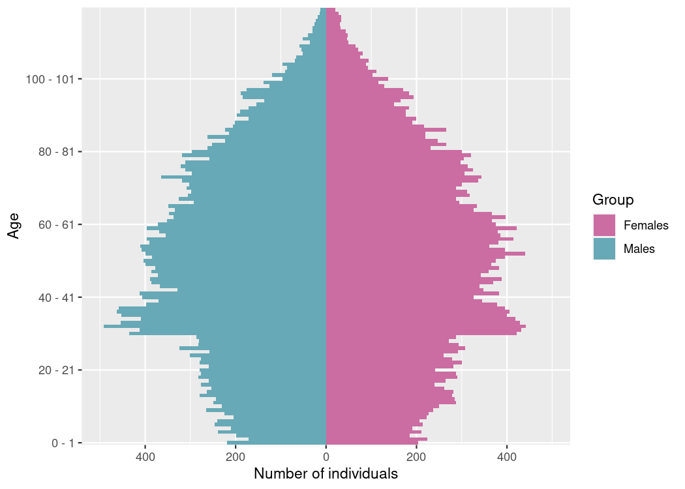

vignettes/IBMPopSim.Rmd
IBMPopSim.RmdThe R package IBMPopSim aims at simulatimg the random evolution of heterogeneous populations, called stochastic Individual-Based Models (IBMs), or agent-based models.
The package enables users to simulate population evolution, in which individuals are characterized by their age and some characteristics, and the population is modified by different types of events, including births/arrivals, death/exit events, or changes of characteristics. The frequency at which an event can occur to an individual can depend on their age and characteristics, but also on the characteristics of other individuals (interactions).
Such models have a wide range of applications in fields including actuarial science, biology, ecology or epidemiology.
IBMPopSim overcomes the limitations of time-consuming IBMs simulations by implementing new efficient algorithms based on thinning methods, which are compiled using the Rcpp package while providing a user friendly interface.
For a detailed description of the theoretical framework behind IBMs that can be implement in IBMPopSim, we refer to (Giorgi, Kaakai, and Lemaire 2023). We provide below the main guidelines for the understanding and implementing stochastic population evolution with IBMPopSim.
Stochastic Individual-Based Models (IBMs) represent a broad class of random population dynamics models, allowing the description of population evolution on a microscopic scale. Informally, an IBM can be summarized by the description of the individuals constituting the population, the various types of events that can occur to these individuals, along with their respective frequencies.
Let us start with a brief description of the class of IBMs that can be simulated using IBMPopSim.
First, individuals can be characterized by their age and/or a collection of discrete or continuous characteristics (position, subgroup, size, habits, …). Formally, an individual is represented by a triplet \(I = (\tau^b, \tau^d, x)\) with:
The population at a given time \(t\) is the set \[Z_t=\{ I_k ; \; k= 1,\dots, N_t\},\] composed of all individuals (alive or dead) who have lived in the population before time \(t\).
The package enables users to simulate populations where one or more of the five following event types may occur:
With each event type is associated an event kernel, describing how the population is modified following the occurrence of the event. For some event types, the event kernel requires explicit specification. For example, in the case of a new individual entering the population (entry event), the model must define how the age and characteristics of this new individual are chosen. For instance, the characteristics of a new individual in the population can be chosen uniformly in the space of all characteristics, or can depend on the distribution of his parents or those of the other individuals composing the population.
Finally, once the different types of events have been defined, it remains to describe how frequently the events can occur in the population.
Informally, an event intensity is a function \(\lambda^e_t(I, Z_t)\) describing the frequency at which an event \(e\) can occur to an individual \(I\), living in a population \(Z_t\) at a time \(t\). Given a history of the population \((\mathcal{F}_t)\), the probability of event \(e\) occurring to individual \(I\) during a small interval of time \((t,t+dt]\) is proportional to \(\lambda^e(I,t)\):
\[\begin{equation} \mathbb{P}(\text{event } e \text{ occurring to $I$ during } (t,t+dt] | \mathcal{F}_t) \simeq \lambda^e_t(I, Z_t)dt. \end{equation}\]
The intensity function \(\lambda^e\) can include dependency on the individual’s \(I\) age \(a(t)\) and characteristics \(x\), the time \(t\), or the population composition \(Z\). The dependence of \(\lambda^e\) on the population \(Z\) models interactions between individuals in the populations. Hence, two types of intensity functions can be implemented in IBMPopSim:
No interactions (individual intensity): The intensity function \(\lambda^e\) does not depend on the population composition. The intensity at which the event of type \(e\) occur to an individual \(I\) only depends on its date of birth and characteristics: \[\begin{equation} \tag{1.1} \lambda^e_t (I,Z_t) = \lambda^e(t, I), \end{equation}\] where \(\lambda^e: \mathbb{R}_+ \times \mathcal{I} \to \mathbb{R}^+\) is a deterministic function.
``Quadratic’’ interactions: The intensity at which an event of type \(e\) occur to an individual \(I\) depends on \(I\) and on the population composition, through an interaction function \(W^e\). The quantity \(W^e(t, I,J)\) describes the intensity of interactions between two alive individuals \(I\) and \(J\) at time \(t\), for instance in the presence of competition or cooperation. In this case, we have \[\begin{equation} \tag{1.2} \lambda^e_t(I,Z_t)=\sum_{j \in Z_t} W^e(t, I, J). \end{equation}\]
See the vignette('IBMPopSim_interaction') for an example of intensity with interaction (associated with the death event) and without interactions (associated with the birth event).
Events intensity bounds In order to simulate the population evolution by thinning for the various events intensities \(\lambda^e_t(I,Z_t)\):
No interactions (individual intensity): The individual event intensity \(\lambda^e\) with no interactions, as defined in (1.1), is assumed to be uniformly bounded: \[\begin{equation} \tag{1.3} \lambda^e(t, I) \leq \bar \lambda^e. \end{equation}\]
``Quadratic’’ interactions: The interaction function \(W^e\), as defined in (1.2), is assumed to be uniformly bounded: \[\begin{equation} \tag{1.4} W^e(t, I, J) \leq \bar W^e. \end{equation}\]
In IBMPopSim, events can also occur in the population with a global intensity of Poisson type \((\mu^e_t)_{t \geq 0 }\), which does not depend on individuals or the population composition, and assumed to be bounded by a constant \(\bar \mu^e\). This can be the case for instance when we model arrivals in the population at a constant rate.
The IBM simulation algorithm is based on an acceptance-rejection method for simulating random times called thinning, described in details in (Giorgi, Kaakai, and Lemaire 2023), and generalizing the algorithm proposed by (Fournier and Méléard 2004) (see also (Ferrière and Tran 2009), (Boumezoued 2016)).
The algorithm is based on exponential ``candidate” event times. Starting from time \(t\), once a candidate event time \(t + \bar T_\ell\) has been proposed, a candidate event type \(e\) (birth, death,…) is chosen with a probability \(p^e\) depending on the event intensity bounds \(\bar \lambda^e\) and \(\bar W^e\). A individual \(I\) is then drawn from the population. Finally, it remains to accept or reject the candidate event with a probability \(q^e(t,I,Z_t)\) depending on the true event intensity. If the candidate event time is accepted, then the event \(e\) occurs at time \(t + \bar T_\ell\) to the individual \(I\). The main steps of the algorithm can be summarized as follows:
We can now detail the construction and simulation of an IBM using the package.
The implementation of an IBM model is based on a few building blocks, easy to manipulate. For code efficiency, the user shall write a few lines of C++ code to define events intensity and kernel. This code is concatenated with internal code in the package and the result is compiled internally using the Rcpp package. The produced model is usually very fast and can be multithreaded. Furthermore, the parameters of the model can be modified from a call to another without having to recompile the code.
The latest stable version can be installed from CRAN:
install.packages('IBMPopSim')The latest development version can be installed from github:
# install.packages("devtools")
devtools::install_github('DaphneGiorgi/IBMPopSim')First example to check installation
To illustrate the use of the package and to check the installation, a simple model with Poisson arrivals and exits is implemented. Starting from an initial population pop, we define two events birth and death with intensity of Poisson type, we create the model birth_death and simulate the population evolution over 10 years.
library(IBMPopSim)
init_size <- 100000
pop_init <- population(data.frame(birth = rep(0, init_size), death = NA))
birth = mk_event_poisson(type = 'birth', intensity = 'lambda')
death = mk_event_poisson(type = 'death', intensity = 'mu')
params = list('lambda' = 100, 'mu' = 100)
# mk_model compiles C++ code using sourceCpp from Rcpp
birth_death <- mk_model(characteristics = get_characteristics(pop_init),
events = list(birth, death),
parameters = params)
sim_out <- popsim(model = birth_death,
initial_population = pop_init,
events_bounds = c('birth' = params$lambda, 'death' = params$mu),
parameters = params,
time = 10)
num_births <- length(sim_out$population$birth) - init_size
num_deaths <- sum(!is.na(sim_out$population$death))
print(c("births" = num_births, "deaths" = num_deaths))
## births deaths
## 967 1064Let’s now take a closer look at each component of a model in IBMPopSim, starting from the population.
A population \(Z_t\) is represented by an object of class ?population containing a data frame where each row corresponds to an individual \(I=(\tau^b, \tau^d, x)\), and which has at least two columns, birth and death, corresponding to the birth date \(\tau^b\) and death/exit date \(\tau^d\) (\(\tau^d\) is set to NA for alive individuals). The population can contain more than two columns if individuals are described by multiple characteristics \(x= (x_1,\dots x_n)\).
Type of a characteristic A characteristic \(x_i\) must be of atomic type: logical (bool in C++), integer (int), double (double) or character (char). The function ?get_characteristics allows to easily get the characteristics names and their types (both in R and C++) from a ?population. We draw the attention to the fact that some names for characteristics are reserved to specific cases : this is the case for birth, death, entry, out, id.
Entry and exit events If entry events can occur in the population, the population shall contain a characteristic named entry. This can be done by setting the flag entry=TRUE in the ?population function, or by calling the ?add_characteristic function on an existing population. During the simulation, the date at which an individual enters the population is automatically recorded in the variable I.entry.
If exit events can occur, the population shall contain a characteristic named out. This can be done by setting the flag out=TRUE in the ?population function, or by calling the ?add_characteristic function. When an individual I exits the population during the simulation, I.out is set to TRUE and its exit time is recorded as a ``death’’ date.
In the example below, individuals are described by their birth and death dates, as well a Boolean characteristics called male, and the entry characteristic. For instance, the first individual is a female whose age at \(t_0=0\) is \(107\) and who was originally in the population.
pop_init <- population(EW_pop_14$sample,entry=TRUE)
str(pop_init)
## Classes 'population' and 'data.frame': 100000 obs. of 4 variables:
## $ birth: num -107 -107 -105 -104 -104 ...
## $ death: num NA NA NA NA NA NA NA NA NA NA ...
## $ male : logi FALSE FALSE TRUE FALSE FALSE FALSE ...
## $ entry: logi NA NA NA NA NA NA ...Individual In the C++ compiled model, an individual I is an object of an internal class containing some attributes (birth_date, death_date and the characteristics, here male), and some methods:
I.age(t): a const method returning the age of an individual I at time t,I.set_age(a, t): a method to set the age a at time t of an individual I (set birth_date at t-a),I.is_dead(t): a const method returning true if the individual I is dead at time t.The most important step of the model creation is the events creation. The call to the function creating an event is of form
mk_event_CLASS(type = "TYPE", name ="NAME", ...)where CLASS is replaced by the class of the event intensity, as described in Section 1.3 and type corresponds to the event type of Section 1.2. They are summarized in the below.
The other arguments depend on the intensity class and on the event type.
| Event type | Type |
|---|---|
| Birth | birth |
| Entry | entry |
| Death | death |
| Exit | exit |
| Swap | swap |
| Custom | custom |
| Intensity class | Class |
|---|---|
| Poisson | poisson |
| Inhomogeneous Poisson | inhomogeneous_poisson |
| Individual | individual |
| Interaction | interaction |
The intensity function and the kernel of an event are defined through
arguments of the function mk_event_CLASS. These arguments are
strings composed of few lines of code defining the frequency of the event and
the action of the event on individuals. Since the model is compiled
using Rcpp, the code should be written in C++. However, thanks to the
model parameters and functions/variables of the package, even the
non-experienced C++ user can define a model quite easily. Several
examples are given in the vignettes of this package, and basic
C++ tools are presented in the vignette('IBMPopSim_cpp').
The optional argument name gives a name to the event. If not
specified, the name of the event is its type, for instance
death. However, a name must be specified if the model is
composed of several events with the same type.
Parameters In order to facilitate the implementation, the user can defined a list of model parameters, stored in a named list. The parameters can be of
atomic type, numeric vector or matrix,
predefined function of one variable ( ?stepfun, ?linfun, ?gompertz,
?weibull, ?piecewise_x), or also
piecewise functions of two variables (?piecewise_xy). We refer to the for more details on parameters types.
The parameters’ name can be used in the event and intensity definitions.
These names are fixed and cannot be modified after the compilation of the model, whereas the values of parameters can be modified from a simulation to another.
Following the description of events intensities given in Section 1.3, the intensity of an event \(e\) belong to one of the following three classes: individual intensities without interaction between individuals (\(e\in \mathcal{E}\)), corresponding to (1.1), individual intensities with interaction (\(e\in \mathcal{E}_W\)), corresponding to events (1.2), and (homogeneous or inhomogeneous) Poisson intensities (\(e\in \mathcal{P}\)) \((\mu^e_t)_{t\geq 0}\).
Event creation with individual intensity An event \(e\in \mathcal{E}\) has an intensity of the form \(\lambda^e(t, I)\) which depends only on the individual \(I\) and time \(t\). Events with such intensity are created using the function
mk_event_individual(type = "TYPE",
name = "NAME",
intensity_code = "INTENSITY", ...)The intensity_code argument is a character string containing
few lines of C++ code describing the intensity function \(\lambda^e(t, I)\).
The intensity value has to be stored in a variable called
result and the
variables available (in addition to the model paramaters defined by the user) for the intensity code are given in the table below.
Examples
death_intensity<- "if (I.male)
result = alpha_1*exp(beta_1*age(I, t));
else
result = alpha_2*exp(beta_2*age(I,t));"corresponds to a death intensity equal to \(d_1(a) = \alpha_1 \exp(\beta_1 a)\) for males and \(d_2(a) = \alpha_2 \exp(\beta_2 a)\) for females. In this case, the intensity function depends on the individuals’ age, gender, and on the model parameters \(\alpha = (\alpha_1, \alpha_2)\) and \(\beta = (\beta_1, \beta_2)\).
This is done by creating the death function \(d\) using the predefined package functions ?piecewise_xy and ?gompertz. The function is then recorded as a model parameter and used in the argument intensity_code of ?mk_event_individual.
time_dep_function <- piecewise_xy(c(5),
list(gompertz(0.1,0.005),
gompertz(0.08,0.005)))
time_dep_function(0, 65) # death intensity at time 0 and age 65.
## [1] 0.1384031
params <- list("death_function"= time_dep_function)
death_event <- mk_event_individual(type = "death",
intensity_code = "result=time_dep_intensity(t,age(I,t));")Event creation with interaction intensity An event \(e\in \mathcal{E}_W\) is an event which occurs to an individual at a frequency which is the result of interactions with other members of the population (see Equation (1.2)), and which can be written as \(\lambda^e_t(I, Z_t)=\sum_{J\in Z_t} W^e(t, I, J)\) where \(W^e(t, I, J)\) is the intensity of the interaction between individual \(I\) and individual \(J\).
An event \(e\in \mathcal{E}_W\) with such intensity is created by calling the function
mk_event_interaction(type = "TYPE",
name = "NAME",
interaction_code = "INTERACTION_CODE",
interaction_type = "random", ...)The interaction_code argument contains few lines of C++ code
describing the interaction function \(W^e(t, I, J)\). The interaction function
value has to be stored in a variable called result and the
available variables for the intensity code are given in the table below.
For example, if we set
death_interaction_code <- "result = max(J.size -I.size,0);"the death intensity of an individual I is
the result of the competition between individuals, depending on a
characteristic named size.
The argument interaction_type, set by default at
random, is an algorithm choice for simulating the model. When
interaction_type=full, the intensity is computed according to (1.2), which can be costly for large populations. One way to avoid this summation, is to set the interaction_type to random. This corresponds to replace the summation by an evaluation of the interaction function \(W^e\) using an individual \(J\) drawn uniformly from the population.
In most cases, the random algorithm is much faster than the
full algorithm, as we illustrate for instance in the vignette('IBMPopSim_interaction'),
where we observe the gain of a factor of 20 between the two algorithms, on a set of standard parameters.
This allows in particular to explore parameter sets that give larger population sizes, without reaching computation times that explode.
Note that events with individual intensities are also much faster to simulate since they only require to observe one individual to be computed.
| Variable | Description |
|---|---|
I |
Current individual |
J |
Another individual in the population (only for interaction) |
t |
Current time |
| Model parameters | Depends on the model |
Events creation with Poisson and Inhomogeneous Poisson
intensity For events \(e\in\mathcal{P}\) with an intensity \(\mu^e(t)\) which does not
depend on the population, the event intensity is of class inhomogeneous_poisson or poisson
depending on whether or not the intensity depends on time (in the second case the intensity is constant).
For Poisson (constant) intensities the events are created with the function
mk_event_poisson(type = "TYPE",
name = "NAME",
intensity = "CONSTANT", ...)The following example creates a death event, where individuals die
at a constant intensity lambda (which has to be in the list of
model parameters).
mk_event_poisson(type = "death",
intensity = "lambda")When the intensity depends on time (but not on the population), the event can be created similarly by using the function
mk_event_inhomogeneous_poisson(type = "TYPE",
name = "NAME"
intensity_code = "INTENSITY", ...)The following example creates the same death event than before, but now individuals die at the rate \(\lambda(1+ \cos(t))\).
mk_event_inhomogeneous_poisson(type = "death",
intensity_code = "result = lambda*(1+cos(t));")When an event occurs, the model should specify how the event modify the population. This behavior is described in the kernel_code parameter of the mk_event_CLASS(type = "TYPE", name ="NAME", ...) function. The kernel_code is NULL by default and doesn’t have to be specified for death, exit events and birth events, but mandatory for entry and swap events. Recall that the kernel_code argument is a string composed of a few lines of C++ code, characterizing the individual characteristics following the event. The table at the end of the section summarizes the list of available variables that can be used in the kernel_code.
Death event If the user defines a death event, the death date of the current individual I is set to the current time t.
Exit event When an individual I exits the population, I.out is set to TRUE and his exit time is recorded as a “death” date.
Birth event The default generated event kernel is that an individual I gives birth to a new individual newI of age 0 at the current time t, with same characteristics than the parent I. If no kernel is specified, the default generated C++ code for a birth event is:
individual newI = I;
newI.birth_date = t;
pop.add(newI);The user can modify the birth kernel, by specify the argument kernel_code of mk_event_CLASS. In this case, the generated code is
individual newI = I;
newI.birth_date = t;
_KERNEL_CODE_
pop.add(newI);where _KERNEL_CODE_ is replaced by the content of the kernel_code argument. For instance, in a population where individuals are characterized by their gender, the kernel code
birth_kernel_code <- "newI.male = (CUnif(0, 1) < p_male);"creates new individuals which are males with probability p_male, or females otherwise. Here, p_male should be included in the list of model parameters.
I enters the population, I.entry is set as the date at which the individual enters the population. When an entry occurs the individual entering the population is not of age \(0\). In this case, the user must specify the kernel_code argument indicating how the age and characteristics of the new individual are chosen. For instance,
mk_event_poisson(type = "entry", name = "ev_example", intensity = "lambda",
kernel_code = "double a_I= max(CNorm(20,2),0);
newI.set_age(a_I,t);")creates an event of type Entry, named ev_example, where individuals enter the population at a constant intensity lambda (which has to be in the list of model parameters). When an individual newI enters the population at time t, his age is chosen as a normally distributed random variable, with mean 20 and variance 4, using the function CNorm() (see vignette('IBMPopSim_cpp')).
| Variable | Description |
|---|---|
I |
Current individual |
t |
Current time |
pop |
Current population (vector) |
newI |
New individual. By default for birth events newI = I with newI.birth = t
|
| Model parameters | Depends on the model |
When there are several entry events, the user can identify which events generated the entry of an individual by adding a characteristic to the population recording the event name/id when it occurs. The same holds for the other types of events. See e.g. vignette('IBMPopSim_human_pop') for an example with different death events.
Once the population, the events, and model parameters are defined, the IBM model is created using the function
?mk_model.
model <- mk_model(characteristics = get_characteristics(pop_init),
event = events_list,
parameters = model_params)During this step which can take a few seconds, the model is created and compiled using the Rcpp package. One of the advantages of the model structure in IBMPopSim is that the model depends only on the population characteristics’ and parameters names and types, rather than their values. This means that once the model has been created, various simulations can be done with different initial populations and parameters values.
Example Here is an example of model with a population structured by age and gender, with birth and death events. The death intensity of an individual of age \(a\) is \[d(a) = 0.008 \exp(0.02a),\] and females between 15 and 40 can give birth with birth intensity 0.05. The newborn is a male with probability \(p_{male}= 0.51\).
params <- list("p_male"= 0.51,
"birth_rate" = stepfun(c(15,40),c(0,0.05,0)),
"death_rate" = gompertz(0.008,0.02))
death_event <- mk_event_individual(type = "death", name= "my_death_event",
intensity_code = "result = death_rate(age(I,t));")
birth_event <- mk_event_individual( type = "birth",
intensity_code = "if (I.male)
result = 0;
else
result=birth_rate(age(I,t));",
kernel_code = "newI.male = CUnif(0, 1) < p_male;")
pop <- population(EW_pop_14$sample)
model <- mk_model(characteristics = get_characteristics(pop),
events = list(death_event,birth_event),
parameters = params)
# summary(model)Once the model has been created, the random evolution of the population can be simulated over a period of time \([0,T]\) by calling the function popsim:
popsim(model, pop_init, events_bounds, parameters, age_max=Inf, time,...)where model is the model created in the previous step, pop_init is the initial population, events_bounds the event bounds, parameters is the list of parameters values, age_max is
the maximum age of individuals in the population (set by default to Inf) and time is the final simulation time \(T\) or a vector of times \((t_1, \dots ,t_n)\).
The IBM simulation algorithm for simulating random times is fully described in (Giorgi, Kaakai, and Lemaire 2023).
Since the IBM simulation algorithm is based on an acceptance-rejection method for simulating random times, the user has to specify bounds for the intensity (or interaction) functions of each event (see assumptions (1.3) and (1.4)). These bounds should be stored in a named vector, where for event \(e\), the name corresponding to the event bound \(\bar{\mu}^e\), \(\bar{\lambda}^e\) or \(\bar{W}^e\) is the event name defined during the event creation step.
Example In the model example built in the previous section, the birth intensity of an individual of age \(a\) is \(0\) if he is a male, and \[ b(a) = 0.005 \mathbf{1}_{[15,40]},\] if the individual is a female. Thus, the intensity bound for birth events is \(\bar\lambda_b = 0.005\).
Since the death intensity function is not bounded, the user will have to specify a maximum age \(a_{max}\) in popsim (all individuals above \(a_{max}\) die automatically). Then, the bound for death events is
\[ \bar \lambda_d = 0.008\exp(0.02 a_{max}).\]
In our example, the death event has been named "my_death_event". No name has been specified for the birth event which thus has the default name "birth". Then,
a_max <- 120 # maximum age
events_bounds <- c("my_death_event" = 0.008*exp(0.02*a_max),
"birth" = max(params$birth_rate))Note that the ?max operator has been overloaded for some predefined functions of the package such as ?stepfun.
Once the model and events bounds have been defined, a random trajectory of the population can be simulated by calling
sim_out <- popsim(model, pop, events_bounds, params,
age_max = a_max, time = 30)sim_out is a list composed of
arguments of the simulation inputs, including the initial population, parameters and event bounds.logs of variables related to the simulation algorithm.population.When there are no swap events (individuals don’t change of characteristics), the evolution of the population over the period \([0,30]\) is recorded in a population object called sim_out$population.
Each line of sim_out$population contains the information of an individual who lived in the population over the period \([0,30]\). This includes individuals who were initially in pop, as well as individuals who were born or entered the population.
The following Table describes the elements of the vector sim_out$logscontaining information on simulation algorithm:
| Elements | Description |
|---|---|
proposed_events |
Number of candidate event times proposed during the simulation |
effective_events |
Number of events which occured during the simulation |
cleanall_count |
Number of population cleans |
duration_ns |
Simulation time |
For instance, the acceptance rate in the toy model is
sim_out$logs['effective_events']/sim_out$logs['proposed_events']
## effective_events
## 0.2183868Optional parameters If there are no interactions between individuals, i.e. if there
are no events with intensity of class interaction, then the
simulation can be parallelized easily by setting the optional parameter
multithreading (FALSE by default) to TRUE.
By default, the number of threads is the number of concurrent threads
supported by the available hardware implementation. The number of threads
can be set manually with the optional argument num_threads.
By default, when the proportion of dead individuals in the population exceeds \(10\%\), the dead individuals are removed from the population. The user can modify this ratio using the optional argument clean_ratio, or by removing dead individuals from the population with a certain frequency, given by the clean_step argument. Finally, the user can also define the seed of the random number generator stored in the argument seed.
Parameters modification and event removal As explained in Section 2.4 the structure of the compiled model allows the parameters’ values to be changed without recompiling the model. For instance, the parameter of the Gompertz death function can be modified to study the impact of an increase in mortality. Before running the simulation, the events bounds should be updated accordingly accordingly. An event can also be removed by setting the corresponding event bound to 0.
Base functions to study the simulation outputs are provided in the package. For instance, the population age pyramid can computed at a give time (resp. at multiple dates) with the function ?age_pyramid (resp. ?age_pyramids). We refer to the other vignettes for more details on age pyramids computation and visualization.
pop_out <- sim_out$population
# Population age-pyramid at time 30:
pyr <- age_pyramid(pop_out, ages = 0:a_max, time = 30)
plot(pyr)
Mortality tables with compatibles with packages such as StMoMo can also be computed by with the functions ?death_table and ?exposure_table.
female_pop <- pop_out[pop_out$male==FALSE, ]
Dxt <- death_table(female_pop, ages = 85:90, period = 20:30) # Death table
Ext <- exposure_table(female_pop, ages = 85:90, period = 20:30)When there are swap events (individuals can change of characteristics), recording the dates of swap events and changes of characteristics following each swap event is a memory intensive and computationally costly process. To maintain efficient simulations in the presence of swap events, we propose the following solution.
?popsim.
In order to record individuals’ characteristics at different dates, the argument time of ?popsim can be replaced vector of dates \((t_0,\dots, t_n)\). In this case, popsim returns in the object population a list of \(n\) population representing the population at time \(t_1,\dots t_n\), simulated from the initial time \(t_0\).
For \(i=1\dots n\), the \(i\)th data frame describes individuals who lived in the population during the period \([t_0,t_i]\), with their characteristics at time \(t_i\).
Example We consider a population divided into two subgroups. Individuals can swap from subgroup 1 (resp. 2) to subgroup 2 (resp. 1) at rate 0.1 (resp. 0.3).
pop <- population(data.frame("birth" = rep(0,1e5), "death" = rep(NA,1e5),
"sub_grp" = sample(1:2, 1e5, replace = TRUE)))
rates <- list( k12 = 0.1, k21=0.3)
#Only swap events occur in the population
swap_event <- mk_event_individual(type = "swap",
intensity_code = "if (I.sub_grp == 1) result = k12;
else result = k21;",
kernel_code = "I.sub_grp = 3 - I.sub_grp;")
model_swap <- mk_model(characteristics = get_characteristics(pop),
events = list(swap_event),
parameters = rates)
## Warning in compatibility_chars_events(characteristics, events): The list of events contains a 'swap' event and there is no 'id' in the characteristics.
## Add 'id' to the characteristics if tracking changes along time is desired.Then, the population is simulated from \(t_0=0\) to \(t_n =20\):
time_vec <- 0:20
sim_out <-popsim(model =model_swap, initial_population= pop,
events_bounds = c("swap"=max(unlist(rates))),
parameters = rates,
time = time_vec,
multithreading = TRUE)The model is an ergodic two states continuous time Markov chain with stationary distribution \((p_1,p_2)=(0,75,0.25)\). The figure below illustrates the convergence of the probability to be in subgroup 1 to \(p_1\)
pop_size <- nrow(pop)
# Mean number of individuals in subgroup 1 at each time:
p_1_t <- lapply(sim_out$population, function(pop_df){
return(nrow(subset(pop_df, sub_grp==1))/pop_size) })## Error in parse(text = input): <text>:2:0: unexpected end of input
## 1: ggplot()+geom_line(aes(x=time_vec[-1],y=p_1_t)+xlab("Time")+ylab("Probability of subgroup 1")
## ^This example shows that IBMPopSim can also be used to simulated continuous time Markov Chain with finite state space.
It is possible also to isolate the individuals’ life course, by adding an id column to the population, which can be done by setting id=TRUE in the population construction, or by calling the ?add_characteristic function to an existing population, in order to identify each individual with a unique integer.
pop <- population(pop, id =TRUE)
model_swap_id <- mk_model(characteristics = get_characteristics(pop),
events = list(swap_event),
parameters = rates)
sim_out_id <-popsim(model = model_swap_id,
initial_population = pop,
parameters = rates,
events_bounds = c("swap"=0.3),
time = seq(0,5, by=1),
multithreading = TRUE)
head(sim_out_id$population[[1]])
## id birth death sub_grp
## 1 1 0 NA 1
## 2 9 0 NA 2
## 3 17 0 NA 2
## 4 25 0 NA 2
## 5 33 0 NA 1
## 6 41 0 NA 1These data frames can be merged into a single data frame summarizing the life course of each individual, by calling the function merge_pop_withid.
pop_list <- sim_out_id$population
pop_merge <- merge_pop_withid(pop_list, chars_tracked='sub_grp')
head(pop_merge)
## id birth death sub_grp_1 sub_grp_2 sub_grp_3 sub_grp_4 sub_grp_5
## 1 1 0 NA 1 1 1 1 1
## 2 32769 0 NA 2 1 1 1 1
## 3 65537 0 NA 2 2 2 2 2
## 4 98305 0 NA 2 1 2 2 1
## 5 31074 0 NA 1 1 1 1 1
## 6 63842 0 NA 1 1 1 1 2Each line of pop_merge corresponds to the life course of one individual. However, the population is only represented at time \(t=0,1..,5\), and this data frame doesn’t account for exact swap event times or multiple swap events that occurred between between two time steps.